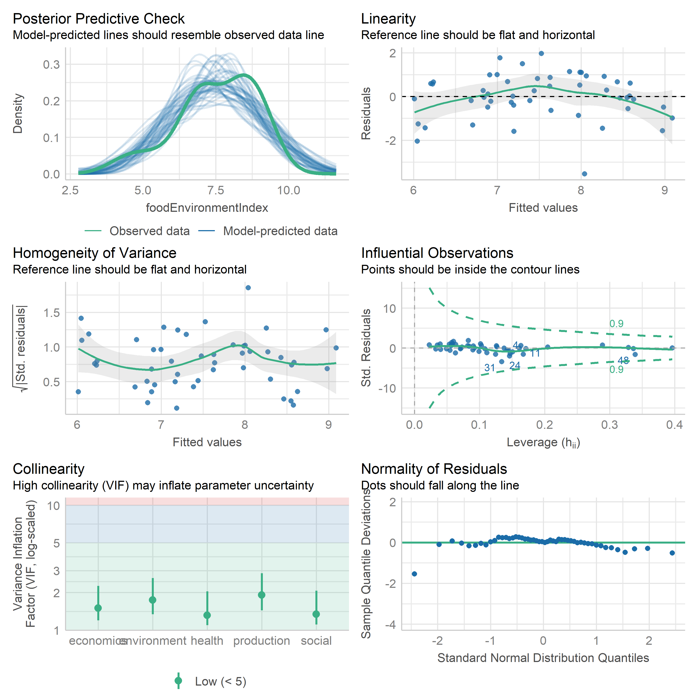
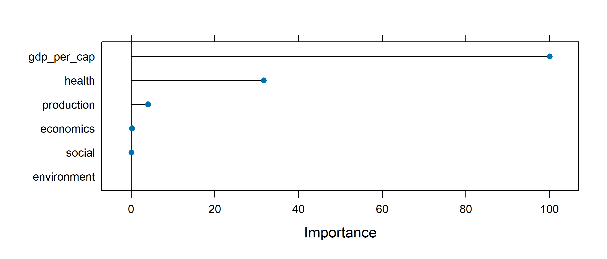
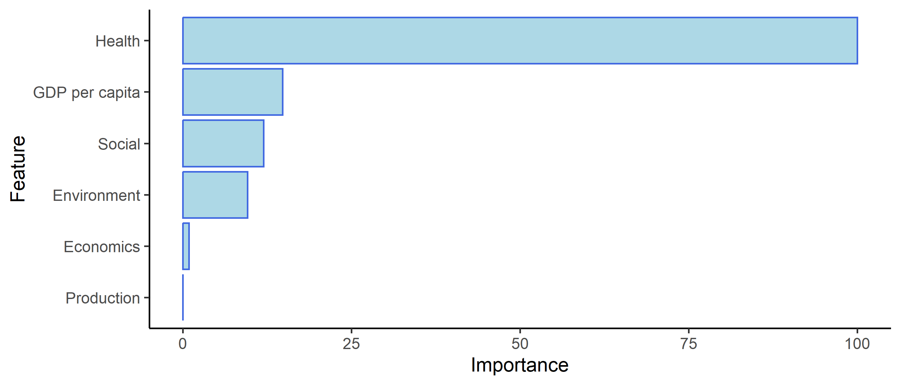
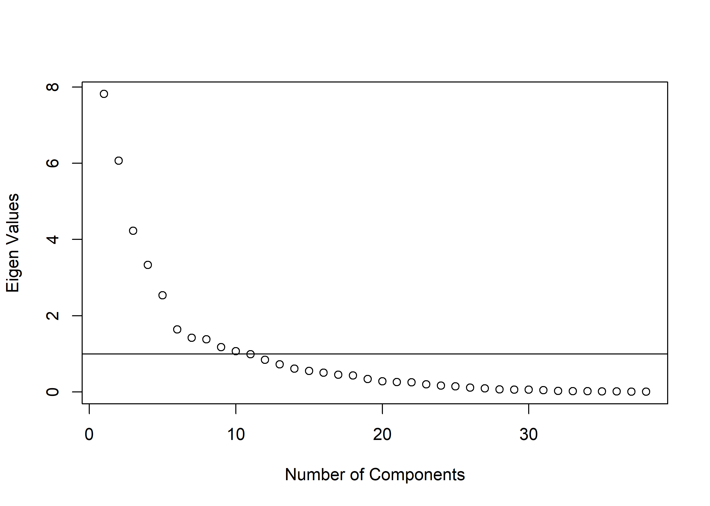

Here we will use the raw + min max + geometric aggregation scores and see how they hold up to validation by external variables and by PCA.
External variables:
Food Security Index (Feeding America, Map the Meal Gap)
Life expectancy, or premature age-adjusted mortality (UW County Health Rankings)
Food Environment Index (UW County Health Rankings)
Happiness Score (WalletHub - if anyone knows of a better metric for this, I’m all ears)
Code
# Load sm_datasm_data <-readRDS('data/sm_data.rds')# Load state fips key to join other datasetsstate_key <- sm_data[['state_key']] %>%select(state, state_code)# Load cleaned aggregated data for all levels of regresionraw_minmax_geo <-readRDS('data/raw_minmax_geo.rds')get_str(raw_minmax_geo)# Reduce to just dimension scores, and remove prefixdimension_scores <- raw_minmax_geo %>%select(state, starts_with('dimen')) %>%setNames(c(str_remove(names(.), 'dimen_')))get_str(dimension_scores)# Pull validation variables out of sm_data, wrangle them to match metrics_df# Also including covariates, gdp and populationvalidation_vars <- sm_data$metadata %>%select(variable_name, metric, definition, source) %>%filter(variable_name %in%c('foodInsecurity','communityEnvRank','happinessScore','wellbeingRank','workEnvRank','foodEnvironmentIndex','lifeExpectancy','population','gdpCurrent' )) %>%pull(variable_name)validation_vars # Get subset of metrics for our validation variables, get latest year onlyvalidation_metrics <- sm_data$metrics %>%filter( variable_name %in% validation_vars, !is.na(value), str_length(fips) ==2 ) %>%get_latest_year()get_str(validation_metrics)# All are available in 2024# Pivot wider, also get rid of trailing yearvalidation_metrics <- validation_metrics %>%pivot_wider(id_cols = fips,names_from = variable_name,values_from = value ) %>%setNames(c(str_remove(names(.), '_[0-9]{4}'))) %>%mutate(across(!fips, as.numeric))get_str(validation_metrics)# 00 US is missing a lot obviously# 11 DC is the other one with missing data# We will just filter down to 50 states to match metrics_df# Combine validation variables with our dimension scores using state key as the # bridge. Also remove DC (don't have validation metrics there)key <- sm_data$state_key %>%select(state, fips = state_code)dat <- dimension_scores %>%left_join(key) %>%left_join(validation_metrics) %>%as.data.frame() %>%filter(state !='DC') %>%select(-fips)# Make a GDP per capita variable from GDP real and population# It was already in millions to begin withdat <- dat %>%mutate(gdp_per_cap = ((gdpCurrent / population) *1e6) /1000)get_str(dat)# Check it outget_str(dat)skimr::skim(dat)# Looks good# Save this for other pagessaveRDS(dat, 'data/metrics_df_with_vals_and_covars.rds')
2 Regression
2.1 Food Insecurity
Code
lm1 <-lm( foodInsecurity ~ economics + environment + health + production + social,data = dat)
% Table created by stargazer v.5.2.3 by Marek Hlavac, Social Policy Institute. E-mail: marek.hlavac at gmail.com % Date and time: Tue, Mar 18, 2025 - 6:43:21 PM
Code
check_model(lm1)
Code
lmtest::bptest(lm1)
studentized Breusch-Pagan test
data: lm1
BP = 12.068, df = 5, p-value = 0.03387
2.2 Life Expectancy
Code
lm2 <-lm( lifeExpectancy ~ economics + environment + health + production + social,data = dat)
% Table created by stargazer v.5.2.3 by Marek Hlavac, Social Policy Institute. E-mail: marek.hlavac at gmail.com % Date and time: Tue, Mar 18, 2025 - 6:43:23 PM
Code
check_model(lm2)
Code
lmtest::bptest(lm2)
studentized Breusch-Pagan test
data: lm2
BP = 4.9045, df = 5, p-value = 0.4276
Code
life_exp_vcov <-vcovHC(lm2, type ='HC3')
% Table created by stargazer v.5.2.3 by Marek Hlavac, Social Policy Institute. E-mail: marek.hlavac at gmail.com % Date and time: Tue, Mar 18, 2025 - 6:43:25 PM
2.3 Food Environment Index
Code
lm3 <-lm( foodEnvironmentIndex ~ economics + environment + health + production + social,data = dat)
% Table created by stargazer v.5.2.3 by Marek Hlavac, Social Policy Institute. E-mail: marek.hlavac at gmail.com % Date and time: Tue, Mar 18, 2025 - 6:43:26 PM
Code
bptest(lm3)
studentized Breusch-Pagan test
data: lm3
BP = 13.607, df = 5, p-value = 0.01831
Code
check_model(lm3)

The Food Environment Index Regression does not show heteroskedasticity, but may well have some non-linear relationships given the residual plots. Health and economics are significant predictors, with a pretty healthy \(R^2\).
Let’s try this one again with a random forest instead of linear model:
Code
# Get a version of dat without irrelevant variablesdat_ml <- dat %>%select( economics, environment, health, production, social, foodEnvironmentIndex, gdp_per_cap )# Split data 60/40set.seed(42)indices <-createDataPartition(dat_ml$foodEnvironmentIndex, p =0.60, list =FALSE)training_data <- dat_ml[indices, ]testing_data <- dat_ml[-indices,]my_folds <-createFolds(training_data$foodEnvironmentIndex, k =5, list =TRUE)# Controlmy_control <-trainControl(method ='cv',number =5,verboseIter =TRUE,index = my_folds)# Check for zero variance or near zero variance indicatorsnearZeroVar(dat, names =TRUE, saveMetrics =TRUE)# All clear# Also let's start a list with other results for preso# hyperparameters, etcml_out <-list()
2.3.1 GLMnet
Code
set.seed(42)food_env_glmnet <-train( foodEnvironmentIndex ~ economics + environment + health + production + social + gdp_per_cap,data = training_data, tuneGrid =expand.grid(alpha =seq(0.1, 1, length =5),lambda =seq(0.0001, 0.1, length =100) ),method ="glmnet",trControl = my_control,preProcess =c('zv', 'center', 'scale'))get_str(food_env_glmnet)# Pull out best tuneml_out$glmnet_best_tune <- food_env_glmnet$bestTune
Code
importance <-varImp(food_env_glmnet, scale =TRUE)# Save for preso saveRDS(importance, 'preso/plots/val3_food_env_glmnet_importance.rds')#pred <-predict(food_env_glmnet, testing_data)ml_out$glmnet_performance <-postResample(pred = pred, obs = testing_data$foodEnvironmentIndex) %>%round(3)# ml_out$glmnet_performanceml_out$glmnet_imp_plot <- importance %>%ggplot(aes(x = Overall, y =rownames(.))) +geom_col(color ='royalblue',fill ='lightblue' ) +theme_classic() plot(importance)

2.3.2 Random Forest
Code
set.seed(42)food_env_rf <-train( foodEnvironmentIndex ~ production + social + health + economics + environment + gdp_per_cap,data = training_data, tuneLength =7,method ="ranger",trControl = my_control,importance ='impurity')get_str(food_env_rf)# Pull out best tuneml_out$rf_best_tune <- food_env_rf$bestTune
OOB prediction error (MSE): 0.6360507
Code
importance <-varImp(food_env_rf, scale =TRUE)# Save for presosaveRDS(importance, 'preso/plots/val3_rf_importance.rds')# Get RMSEA and stuffpred <-predict(food_env_rf, testing_data)ml_out$rf_performance <-postResample(pred = pred, obs = testing_data$foodEnvironmentIndex) %>%round(3)# ml_out$rf_performanceimp <- importance$importance %>%as.data.frame() %>% tibble::rownames_to_column() %>%setNames(c('Feature', 'Importance')) %>%mutate(Importance =round(Importance, 2)) %>%arrange(desc(Importance)) %>%mutate(Feature = Feature %>%str_to_title() %>%str_replace('Gdp_per_cap', 'GDP per capita') )ml_out$rf_imp_plot <- imp %>%ggplot(aes(x = Importance, y =reorder(Feature, Importance),text =paste0('<b>Variable:</b> ', Feature, '\n','<b>Importance:</b> ', Importance ) )) +geom_col(color ='royalblue',fill ='lightblue', ) +theme_classic() +labs(x ='Importance',y ='Feature' )# Save all results for presosaveRDS(ml_out, 'preso/data/ml_out.rds')# Show plotml_out$rf_imp_plot

2.4 Happiness Score
Code
lm4 <-lm( happinessScore ~ economics + environment + health + production + social,data = dat)
% Table created by stargazer v.5.2.3 by Marek Hlavac, Social Policy Institute. E-mail: marek.hlavac at gmail.com % Date and time: Tue, Mar 18, 2025 - 6:43:35 PM
Code
check_model(lm4)
3 PCA
3.1 Component Extraction
Code
raw_minmax_geo <-readRDS('data/raw_minmax_geo.rds')framework <-readRDS('data/filtered_frame.rds')# Filter down to just indicators for PCApca_dat <- raw_minmax_geo %>%select(starts_with('indic')) %>%setNames(c(str_remove(names(.), 'indic_'))) %>%as.data.frame()# get_str(pca_dat)# Explore how many factors to extractVSS(pca_dat, n =8, fm ='pc', rotate ='Promax')
Very Simple Structure
Call: vss(x = x, n = n, rotate = rotate, diagonal = diagonal, fm = fm,
n.obs = n.obs, plot = plot, title = title, use = use, cor = cor)
VSS complexity 1 achieves a maximimum of 0.53 with 2 factors
VSS complexity 2 achieves a maximimum of 0.75 with 3 factors
The Velicer MAP achieves a minimum of 0.04 with 6 factors
BIC achieves a minimum of Inf with factors
Sample Size adjusted BIC achieves a minimum of Inf with factors
Statistics by number of factors
vss1 vss2 map dof chisq prob sqresid fit RMSEA BIC SABIC complex eChisq
1 0.42 0.00 0.069 0 NA NA 85.4 0.42 NA NA NA NA NA
2 0.53 0.67 0.059 0 NA NA 48.6 0.67 NA NA NA NA NA
3 0.53 0.75 0.055 0 NA NA 30.7 0.79 NA NA NA NA NA
4 0.53 0.75 0.046 0 NA NA 19.6 0.87 NA NA NA NA NA
5 0.47 0.73 0.039 0 NA NA 13.2 0.91 NA NA NA NA NA
6 0.48 0.73 0.039 0 NA NA 10.5 0.93 NA NA NA NA NA
7 0.46 0.72 0.041 0 NA NA 8.5 0.94 NA NA NA NA NA
8 0.47 0.68 0.040 0 NA NA 6.5 0.96 NA NA NA NA NA
SRMR eCRMS eBIC
1 NA NA NA
2 NA NA NA
3 NA NA NA
4 NA NA NA
5 NA NA NA
6 NA NA NA
7 NA NA NA
8 NA NA NA
Code
set.seed(42)fa.parallel(pca_dat, fm ='ml')
Parallel analysis suggests that the number of factors = 5 and the number of components = 5
MAP suggests 6, VSS 2 or 3, PA suggests 5. Not half bad. I think we are justified to go with 5.
Code
# Oblique rotations: promax, oblimin, simplimax, clusterrotations <-c('Promax','oblimin','simplimax','cluster')pca_outs <-map(rotations, ~ { pca_dat %>%# scale() %>% pca(nfactors =5, rotate = .x)}) %>%setNames(c(rotations))# Save a version of promax for preso?png(filename ='preso/plots/scree.png',width =800,height =600,units ='px',res =150)plot( pca_outs$simplimax$values,xlab ='Number of Components',ylab ='Eigen Values')abline(h =1)dev.off()
png
2
Code
# Now actually show it plot( pca_outs$simplimax$values,xlab ='Number of Components',ylab ='Eigen Values')abline(h =1)

The scree plot makes a reasonably convincing case for 6 components, as the slope falls off substantially after the fifth.